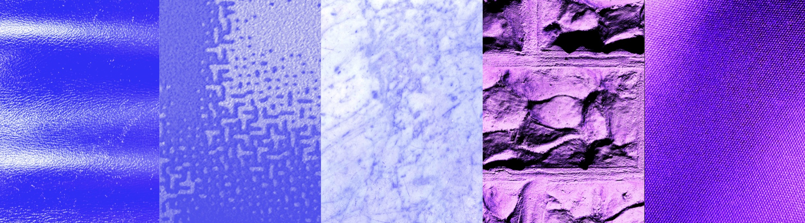
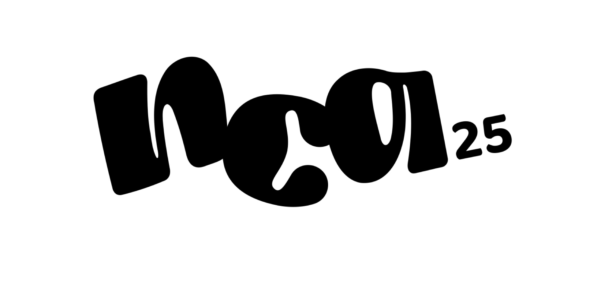
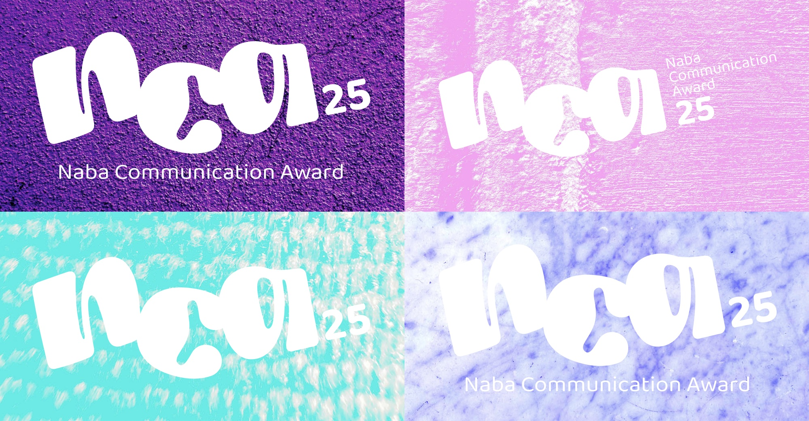
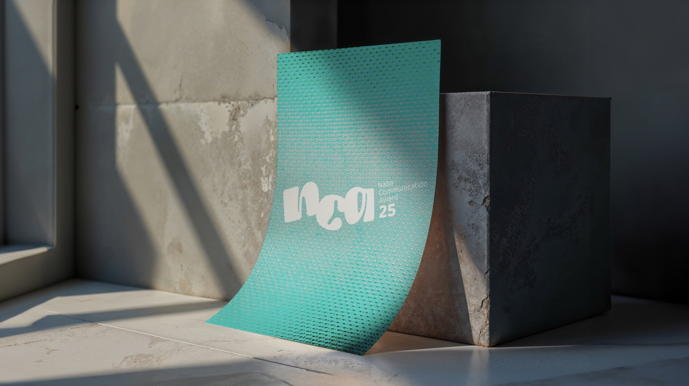
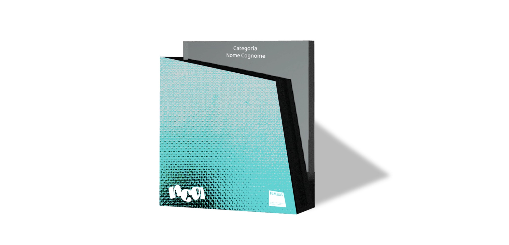

NCA
Branding e campagneNABA - Un’identità in continua trasformazione
Il concept nasce dall’idea di raccontare NABA come un’identità in costante evoluzione: una realtà creativa che si trasforma e si rinnova ogni anno, proprio come gli studenti che la vivono. Da questa visione prende forma un sistema visivo ispirato al concetto di mutaforma.
Le texture degli spazi universitari: pavimenti, muri, grate e mattonelle, diventano parte integrante dell’identità, trasformandosi in superfici e sfondi capaci di dare al progetto un carattere sempre diverso.


Anche il logo segue questa direzione: partendo da una tipografia essenziale, le forme vengono reinterpretate attraverso un movimento organico e dinamico, esprimendo visivamente il concetto di cambiamento.


La palette cromatica, composta da colori accesi e vivaci, contribuisce a rafforzare il carattere creativo e contemporaneo dell’identità, richiamando un immaginario visivo vicino al mondo social.



Video
Il premio
Per il NABA Communication Award abbiamo progettato un premio che riprende il concept dell’identità visiva. L’idea era partire da una lastra di vetro, lavorando sulla sua parte esterna attraverso una texture ispirata alle superfici e ai materiali degli spazi NABA. Il progetto è stato sviluppato in Cinema 4D, applicando alla struttura la palette cromatica dell’identità.
Anche il premio diventa così un’estensione del sistema visivo, mantenendo il legame con il concetto di trasformazione che caratterizza l’intero progetto.

Il libro
Su richiesta di NABA, abbiamo progettato anche la copertina del libro dedicato ai premi assegnati ai vincitori di ogni indirizzo. La copertina riprende il linguaggio visivo del progetto, attraverso una composizione di texture, colori e logo.